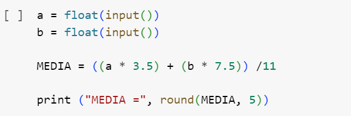
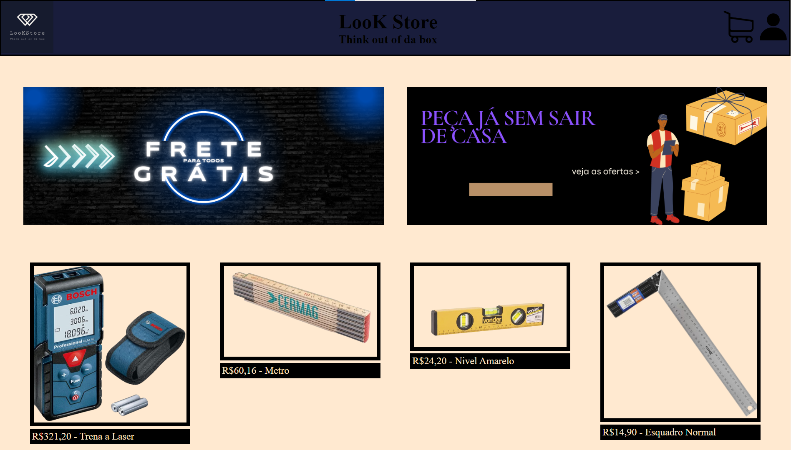
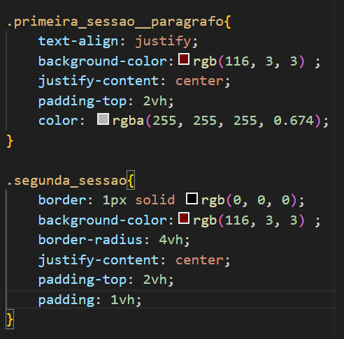

Python
Código - Python
Nas duas primeiras linhas podemos ver as váriaveis e o que podemos guardar dentro delas. No caso do "float", ele serve para armazenar uma variável com vírgula, como "2,22", já o "input" ele serve para escrever o valor e o guardar dentro da variável, seja o "a" ou o "b". Após isso, há uma variável escrito "MEDIA", que basicamente ela serve para calcular uma media ponderada, ou seja, para nos ajudar a calcular uma nota, seja nota de escola, trabalho, dinheiro, etc. Um exemplo de entrada seria o "a = (3.5) e o b = (7.5) e a variável media iria calcular "a 3.5" somando juntamente a "b 7.5" após isso iria dividir por 11. O resultado seria "impresso" através do codigo da ultima linha, ou seja, o "print", que na verdade, ele ira imprimir o texto "MEDIA =" e os 5 números após a vírgula e juntamente ao resultado que comparece ao cálculo da variável "MEDIA" fazendo os cálculos. O que sera impresso será: "MEDIA = 6.22727"
HTML
Projeto - HTML
Esse foi um dos trabalhos que fizemos, no que tivemos que construir nosso próprio site, e meu tema foi arquitetura. Como na minha infância toda meu pai sempre vivia me comprando um Lego por semana, e sempre montava junto comigo, eu sempre gostei dessas coisas, e hoje em dia ele eh arquiteto e tem sua própria marcenaria, na qual ele faz os projetos e ajuda seus marceneiros a construir e montar os móveis. Sempre curti essa área e não vai ser tao cedo que vou parar de gostar, por isso meu tema do meu site foi Arquitetura, aprendi muita coisa sobre por causa do trabalho dele e escolhi algumas ferramentas para colocar em meu site, como a trena a laser, o metro, o nível e o esquadro.
CSS
Código - CSS
Bem, começando pela "primeira_sessao_paragrafo" nela usamos alguns códigos, o text-align: justify; serve para alinhar o texto, o background color, serve para colocar uma cor no fundo da class, o justify-content: center serve para alinhar as escritas no meio da class, o padding-top serve para distanciar uma coisa da outra, serve para preencher a parte de cima da class e o color, serve para mudar a cor das palavras que tenham escritas na class. Já a "segunda_sessao" temos o border, que é para colocar uma borda no texto, o background color como ja disse, é para colocar uma cor no fundo da class, o border-radius serve para deixar a borda da class mais redondinha, o justify-content: center, como eu ja disse é para alinhar no centro da class, o padding-top para distanciar algo do topo, preencher o espaçamento no topo da class e por fim o padding serve para preencher o espaço vazio que deseja.